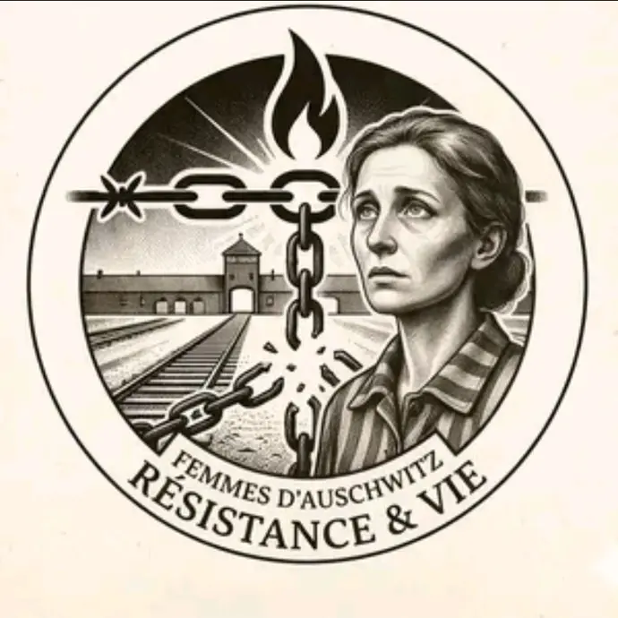

Femmes du convoi des 31000
225 biographies actuellement accessibles.
Denise Moret, matricule 31820Découvrir les femmes

Mémoire • Résistance • Déportation
Portraits et biographies documentées de femmes et d’hommes résistants et déportés, afin de préserver leur histoire et transmettre leur mémoire.
Avertissement : certaines photographies d’archives documentées peuvent heurter la sensibilité, notamment celle des enfants.
Découvrez aussi : Enfants déportés 1939-1945Un mémorial numérique consacré aux visages et aux histoires des enfants déportés.
Ouvrir le mémorial →225 biographies actuellement accessibles.
Denise Moret, matricule 31820
707 biographies actuellement accessibles.
Photographie : notice et crédits
10358 notices réparties par corpus, avec leurs sources et niveaux de certitude.
Photographie : notice et crédits
1575 photographies avec leur nom, leur description et leur notice source.
Photographie : Rafael Abramovich MazelevDécouvrez le travail réalisé au quotidien et les façons simples d’aider à transmettre ces histoires.
Saisissez au moins deux caractères.